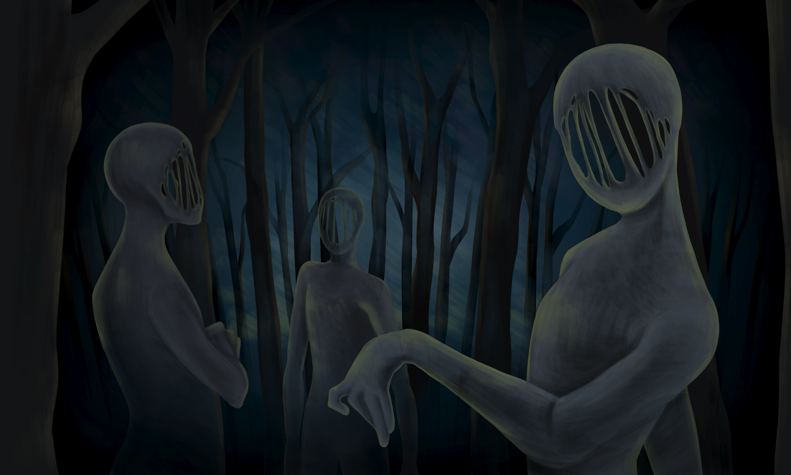

GIMM Artifacts
I am currently enrolled in my second year of the Games, Interactive Media, and Mobile major at Boise State University. I have begun compiling projects to showcase throughout my progression, and the list will only continue to grow. There are many exciting prospects for my future projects and endeavors.
First Game Project
"Ladies vs. Their Autonomous Robot Husbands" was the first video game I ever made. Created first semester of GIMM and full of flaws, this project taught me the nitty gritty of coding and deadlines.
Inform Animation
The animation featured was a group project during second semester of GIMM. It taught me the dynamics of group work and the importance of maintaining a cohesive artistic style. (Credit to Spencer Newbolt, Grace Henry, and Tavi Kohn.)
WordPress Website
The WordPress Website was a project preceeding this one. We were tasked with creating any website we wished using the WordPress engine and hosting it on an ec2 instance.
Click here to view the website. Group Game
"Lust for Crust," the group game project, was the second I completed in the GIMM program. I learned the basics of a state machine and dividing work evenly between group members and their skills.
(Trailer Video not yet Created)

Interactive Comic
The Interactive Mobile Comic group project was one of the most difficult and rewarding projects I've completed to date. We encountered many issues and had to learn collaboration and team problem solving.
(Trailer Video not yet Created)

Group App
This is a placeholder spot for the group game project we will be creating. My group is called SPUM and we consist of me, Grace Henry, and Tavi Kohn. This section will be updated when our project is completed.
Here is a placeholder link.